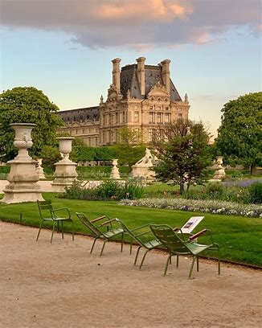

Paris is a city full of parks and gardens, offering a true oasis of greenery in the midst of urban bustle. Each park has its own charm and characteristics, ranging from vast open spaces for sports activities to intimate gardens for relaxation and rejuvenation. Parisian parks are an ideal place for a stroll, a picnic or simply enjoying nature. Some are famous for their sculptures, fountains and historical buildings, while others are renowned for their cultural and leisure activities. Paris parks are a must-see for visitors and Parisians alike looking to escape the bustle of the city and recharge in a peaceful and green environment.
Accueil| Jardin du Luxembourg |
| Did you know that the Luxembourg Garden was once a royal estate? In fact, it was created in 1612 for Queen Marie de' Medici, the widow of King Henry IV. Over the centuries, it has become a popular promenade for Parisians and tourists alike, where one can relax on the lawns, admire the fountains and statues, play chess or tennis, or even attend puppet shows. The garden also houses a beehive where bees collect nectar from flowers and produce high-quality honey. It is a must-visit park that should not be missed. |
| Jardin des Tuileries |
|  |
| The Jardin des Tuileries is one of the most famous gardens in Paris, located between the Louvre and Place de la Concorde. It is an iconic and must-visit place for both visitors to the city and Parisians themselves. The garden has a rich and fascinating history dating back to the 16th century with Catherine de Medici, and is now famous for its beautifully aligned paths, impeccable lawns, majestic fountains, and art sculptures. Visitors can enjoy the view of the surrounding historical buildings while strolling through the gardens or take a moment to relax on one of the benches in the shade of the trees. The Jardin des Tuileries is a place of peace and beauty, a true gem of the city of Paris. |
| Le jardin des Plantes |
| The Jardin des Plantes is an iconic park located in the 5th arrondissement of Paris. Founded in 1635, it is one of the oldest botanical gardens in the world and houses an incredible variety of plants and animal species. The garden is divided into several sections, including the large tropical greenhouse, the alpine garden, the iris garden, and the rose garden. Visitors can also visit the Gallery of Evolution, a museum dedicated to biodiversity and natural history. The Jardin des Plantes is a place of relaxation and learning, offering a unique experience for nature lovers and botany enthusiasts. |
| Parc Monceau |
| Parc Monceau is a beautiful park located in the 8th arrondissement of Paris. Created in 1769, it is one of the most picturesque and charming parks in the city. The park is famous for its Anglo-Chinese gardens, lakes, romantic bridges, as well as its historical monuments, such as the Arc de Triomphe and the Naumachie. Visitors can admire a wide variety of plants and flowers, as well as sculptures and works of art. Parc Monceau is an ideal place to relax and take a walk, offering a peaceful and stunning setting in the heart of Paris. |
| Parc de Bercy |
| The Parc de Bercy is a modern park located in the 12th arrondissement of Paris. Created in the 1990s, it is one of the newest parks in the city and offers a unique experience for visitors. The park is divided into several themed gardens, including the romantic garden, the iris garden, and the Mediterranean garden. Visitors can also enjoy the park's many amenities, such as sports fields, playgrounds, and picnic areas. The Parc de Bercy is an ideal place to spend a day with family or friends, offering a green and modern setting in the heart of the city. |